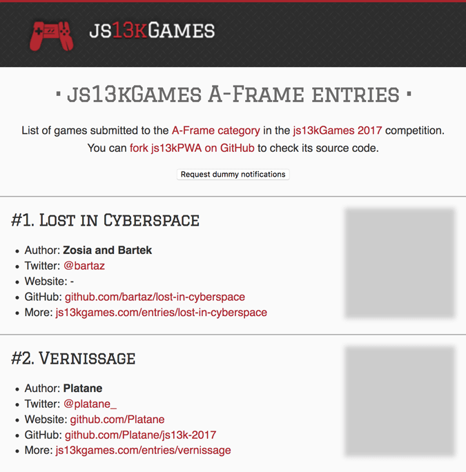

In previous articles we covered APIs that help us make our js13kPWA example a Progressive Web App: Service Workers, Web Manifests, Notifications and Push. In this article we will go even further and improve the performance of the app by progressively loading its resources.
It's important to deliver something meaningful to the user as soon as possible — the longer they wait for the page to load, the bigger the chance they will leave before waiting for everything to finish. We should be able to show them at least the basic view of the page they want to see, with placeholders in the places more content will eventually be loaded.
This could be achieved by progressive loading — also known as Lazy loading. This is all about deferring loading of as many resources as possible (HTML, CSS, JavaScript), and only loading those immediately that are really needed for the very first experience.
Many visitors won't go through every single page of a website, yet the usual approach is to bundle every feature we have into one big file. A bundle.js file can be many megabytes, and a single style.css bundle can contain everything from basic CSS structure definitions to all the possible styles of every version of the site: mobile, tablet, desktop, print only, etc.
It is faster to load all that information as one file rather than many small ones, but if the user doesn't need everything at the very beginning, we could load only what's crucial and then manage other resources when needed.
Bundling is a problem, because the browser has to load the HTML, CSS, and JavaScript before it can paint their rendered results onto the screen. During the few seconds between initial website access and completion of loading, the user sees a blank page, which is a bad experience.
To fix that we can, for example, add defer to JavaScript files:
<script src="app.js" defer></script>
They will be downloaded and executed after the document itself has been parsed, so it won't block rendering the HTML structure. We can also split css files and add media types to them:
<link rel="stylesheet" href="style.css"> <link rel="stylesheet" href="print.css" media="print">
This will tell the browser to load them only when the condition is met.
In our js13kPWA demo app, the CSS is simple enough to leave it all in a single file with no specific rules as to how to load them. We could go even further and move everything from style.css to the <style> tag in the <head> of index.html — this would improve performance even more, but for the readability of the example we will skip that approach too.
Besides JavaScript and CSS, websites will likely contain a number of images. When you include {{htmlelement("img")}} elements in your HTML, then every referenced image will be fetched and downloaded during initial website access. It's not unusual to have megabytes of image data to download before announcing the site is ready, but this again creates a bad perception of performance. We don't need all of the images in the best possible quality at the very beginning of viewing the site.
This can be optimized. First of all, you should use tools or services similar to TinyPNG, which will reduce the file size of your images without altering the quality too much. If you're past that point, then you can start thinking about optimizing the image loading using JavaScript. We'll explain this below.
Instead of having all the screenshots of games referenced in <img> element src attributes, which will force the browser to download them automatically, we can do it selectively via JavaScript. The js13kPWA app uses a placeholder image instead, which is small and lightweight, while the final paths to target images are stored in data-src attributes:
<img src='data/img/placeholder.png' data-src='data/img/SLUG.jpg' alt='NAME'>
Those images will be loaded via JavaScript after the site finishes building the HTML structure. The placeholder image is scaled the same way the original images are, so it will take up the same space and not cause the layout to repaint as the images load.
The app.js file processes the data-src attributes like so:
let imagesToLoad = document.querySelectorAll('img[data-src]');
const loadImages = (image) => {
image.setAttribute('src', image.getAttribute('data-src'));
image.onload = () => {
image.removeAttribute('data-src');
};
};
The imagesToLoad variable contains references to all the images, while the loadImages function moves the path from data-src to src. When each image is actually loaded, we remove its data-src attribute as it's not needed anymore. Then we loop through each image and load it:
imagesToLoad.forEach((img) => {
loadImages(img);
});
To make the whole process more visually appealing, the placeholder is blurred in CSS.

We render the images with a blur at the beginning, so a transition to the sharp one can be achieved:
article img[data-src] {
filter: blur(0.2em);
}
article img {
filter: blur(0em);
transition: filter 0.5s;
}
This will remove the blur effect within half a second, which looks good enough for the "loading" effect.
The image loading mechanism discussed in the above section works OK — it loads the images after rendering the HTML structure, and applies a nice transition effect in the process. The problem is that it still loads all the images at once, even though the user will only see the first two or three upon page load.
This problem can be solved with the new Intersection Observer API — using this we can ensure that images will be loaded only when they appear in the viewport.
This is a progressive enhancement to the previously working example — Intersection Observer will load target images only when the user scrolls down, causing them to display in the viewport.
Here's what the relevant code looks like:
if('IntersectionObserver' in window) {
const observer = new IntersectionObserver((items, observer) => {
items.forEach((item) => {
if(item.isIntersecting) {
loadImages(item.target);
observer.unobserve(item.target);
}
});
});
imagesToLoad.forEach((img) => {
observer.observe(img);
});
} else {
imagesToLoad.forEach((img) => {
loadImages(img);
});
}
If the {{domxref("IntersectionObserver")}} object is supported, the app creates a new instance of it. The function passed as a parameter is handling the case when one or more items are intersecting with the observer (i.e. is appearing inside the viewport). We can iterate over each case and react accordingly — when an image is visible, we load the correct image and stop observing it as we no longer need to observe it.
Let's reiterate our earlier mention of progressive enhancement — the code is written so that the app will work whether Intersection Observer is supported or not. If it's not, we just load the images using the more basic approach covered earlier.
Remember that there are many ways to optimize loading times, and this example is exploring only one of the approaches. You could try to make your apps more bulletproof by making them work without JavaScript — either using {{htmlelement("noscript")}} to show the image with final src already assigned, or by wrapping <img> tags with {{htmlelement("a")}} elements pointing at the target images, so the user can click and access them when desired.
We won't do that because the app itself is dependent on JavaScript — without it, the list of games wouldn't even be loaded, and the Service Worker code wouldn't be executed.
We could rewrite the loading process to load not only the images, but the complete items consisting of full descriptions and links. It would work like an infinite scroll — loading the items on the list only when the user scrolls the page down. That way the initial HTML structure would be minimal, loading time even smaller, and we would have even greater performance benefits.
Less files to load initially, smaller files split into modules, use of placeholders, and loading more content on demand — this will help achieve faster initial load times, which brings benefits to the app creator and offers a smoother experience to the user.
Remember about the progressive enhancement approach — offer a usable product no matter the device or platform, but be sure to enrich the experience to those using modern browsers.
That's all for this tutorial series — we went through the source code of the js13kPWA example app and learned about the use of progressive web apps features including an Introduction, PWA structure, offline availability with Service Workers, installable PWAs, and finally notifications. We also explained push with help from the Service Worker Cookbook. And in this article, we've looked into the concept of progressive loading, including an interesting example that makes use of the Intersection Observer API.
Feel free to experiment with the code, enhance your existing app with PWA features, or build something entirely new on your own. PWAs give a huge advantage over regular web apps.
{{PreviousMenu("Web/Progressive_web_apps/Re-engageable_Notifications_Push", "Web/Progressive_web_apps")}}
{{QuickLinksWithSubpages("/en-US/docs/Web/Progressive_web_apps/")}}